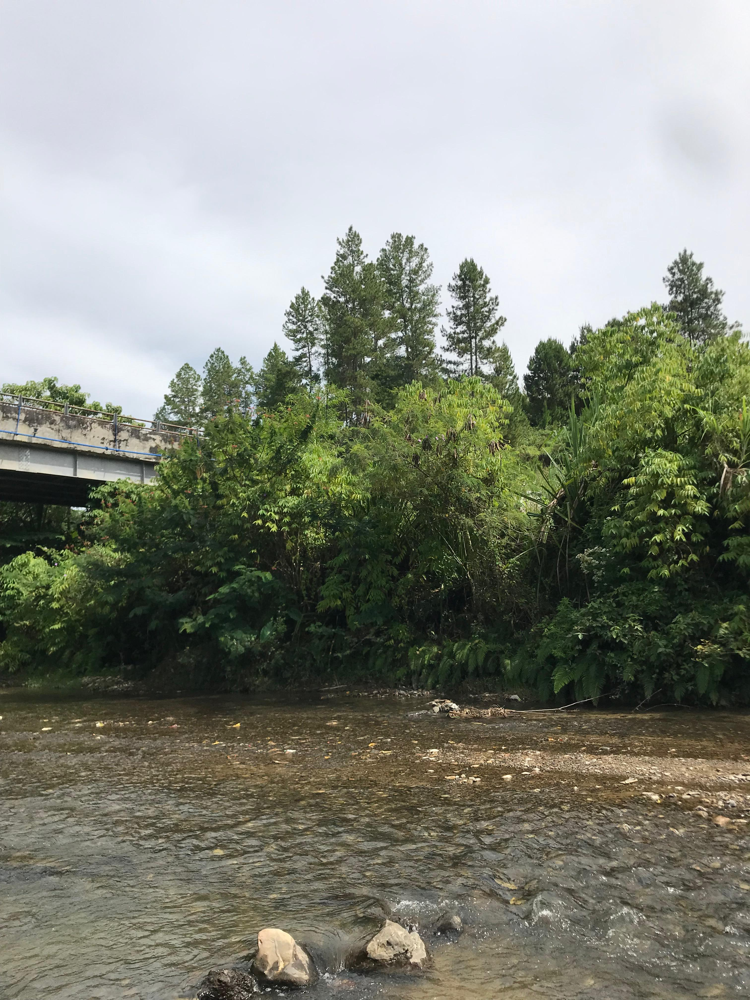

Sejarah Singkat
Desa Kuta Ujung terdiri dari empat dusun yaitu Jerata, Burlah, Bermong, dan Kampung Tue. Nama "Kuta" dan "Ujung" mencerminkan nilai historis dan filosofi masyarakat Gayo.
Dusun Jerata ditetapkan sebagai Kampung KB pada 2023, dan desa terus berkembang dengan dukungan Dana Desa untuk pembangunan dan pertanian.
Visi dan Misi
Visi: Mewujudkan desa mandiri, maju, dan berbudaya.
Misi:
- Meningkatkan kualitas SDM masyarakat.
- Mendorong pembangunan infrastruktur berkelanjutan.
- Melestarikan budaya dan nilai lokal.
- Memperkuat partisipasi masyarakat dalam pembangunan.
Kondisi Sosial Ekonomi
Sebagian besar masyarakat Desa Kuta Ujung bekerja di sektor pertanian dan perkebunan. Komoditas utama meliputi padi, kopi, dan sayuran.
Pendidikan dasar dan kesehatan sudah tersedia namun perlu peningkatan fasilitas dan tenaga. Program pemberdayaan terus ditingkatkan demi kesejahteraan warga.
Video Desa
Galeri Foto Desa
